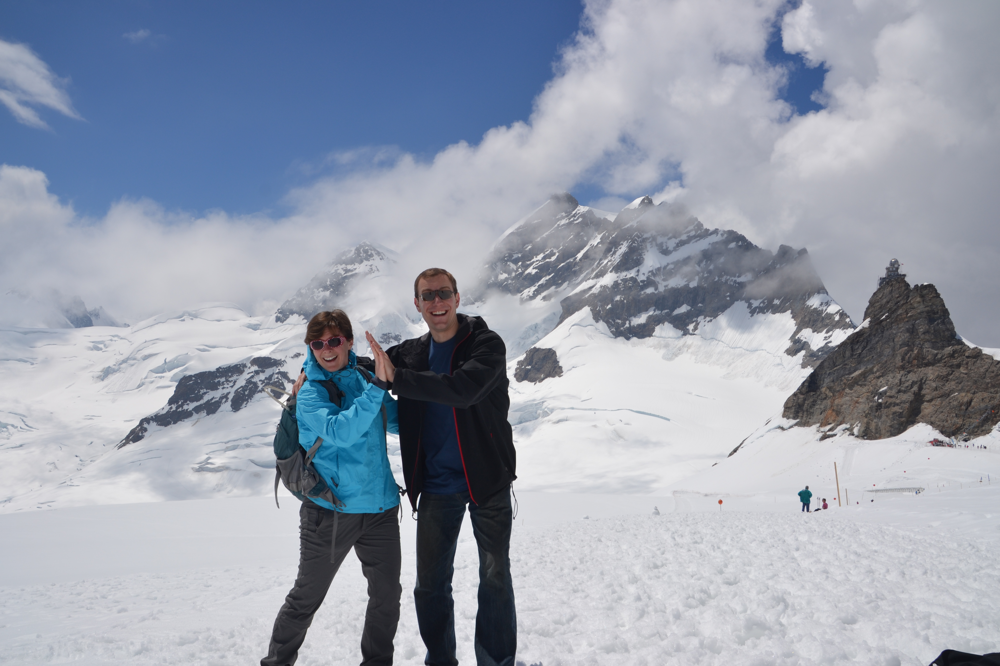
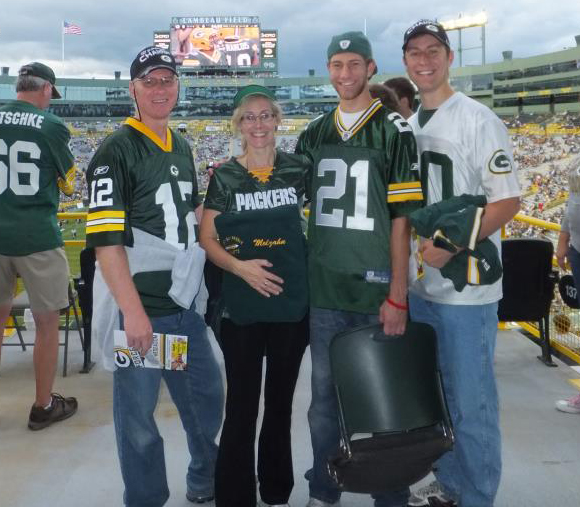

Biography
I grew up in Green Bay, WI and attended Preble High School, obtaining my diploma in 2004. I earned the Bachelor's of Science degree from the University of Wisconsin-Madison, double majoring in Electrical Engineering and Mathematics, graduating in 2008 with highest distinction honors. During my undergraduate program, I interned at Wisconsin Public Service Corporation in Green Bay, working three summers in information technology and one summer in electric distribution engineering. I also interned at Ford Motor Company before the start of graduate school, where I developed computer models of electric motors used in hybrid vehicles.
My graduate studies at the University of Wisconsin-Madison consisted of courses and research in both engineering and policy. I completed the graduate certificate in Energy Analysis and Policy (EAP) in May 2010. Working with Madison Gas and Electric, the capstone project for the EAP certificate program investigated locations for electric vehicle charging stations.
I completed the Master's of Science degree in Electrical Engineering in December 2010. My master's research focused on formulation of the power flow equations as a multiparameter eigenvalue problem and on a new way to solve the induction machine initial conditions problem for dynamic power system simulations (thesis pdf).
In December 2012, I completed the Master's of Public Affairs degree in the La Follette School of Public Affairs at UW-Madison. This program primarily focused on coursework in such topics as economics, policy analysis, public management, and statistics. I also had the opportunity to work with the Public Service Commission of Wisconsin to publish a paper (pdf) on a statistical investigation of speculation in a specific type of electricity market (the financial transmission rights market of the Midwest Independent System Operator).
During my graduate program, I also worked with the Federal Energy Regulatory Commission (FERC) to develop methodologies for ranking the importance of transmission facilities for several purposes: determining which transmission facilities are part of the "bulk electric system" and therefore under FERC's jurisdiction (pdf), identifying which facilities are most important to transmission system reliability, and finding transmission facilities that are most important for reliability with respect to a specified important location such as a military base. I conducted a three-day training session at FERC in June 2013.
In Fall 2012, I had the opportunity to be a teaching assistant for ECE 427: Electric Power Systems. I led a weekly discussion section, held biweekly office hours, answered student questions, and created homework solutions. Helping students with the final project regarding transmission expansion planning was particularly rewarding.
I completed the Ph.D. degree in Electrical Engineering in August of 2013. My dissertation is titled "Application of Semidefinite Optimizaton Techniques to Problems in Electric Power Systems." Semidefinite programming is a type of conic optimization that is capable of finding the global optimum for many engineering problems. I use semidefinite programming to investigate the power flow and optimal power flow problems, which are important for electric power system reliability and economics (see, e.g., pdf1, pdf2, pdf3). My dissertation received second place for the 2014 Harold A. Peterson Best Dissertation Award in the Electrical and Computer Engineering Department at the University of Wisconsin-Madison.
I am very thankful to my colleagues at the University of Wisconsin-Madison, particularly my advisor Dr. Bernard Lesieutre and the other members of my committee, Dr. Christopher DeMarco, Dr. Thomas Jahns, Dr. Giri Venkataramanan, Dr. Michael Ferris, and Dr. Steven Wright. I would also like to thank the professors in the La Follette School of Public Affairs, especially Dr. Carolyn Heinrich and Dr. Gregory Nemet.
I appreciate the financial support of the UW-Madison Electrical and Computer Engineering Department Distinguished Fellowship, the National Science Foundation Graduate Research Fellowship, the Grainger Power Engineering Scholarship, and research and teaching assistanceships.
From September 2013 to August 2015, I was a Dow Sustainability Fellow working with Dr. Ian Hiskens at the University of Michigan in Ann Arbor. I was also fortunate to have opportunities to work with Dr. Johanna Mathieu, Dr. Laura Balzano, Dr. Maria Vrakopoulou, and Dr. Jenny Felder Marley as well as many other great researchers. In this position, I continued my work in applying optimization techniques and policy analysis to problems in the field of electric power systems.
In August 2015, I began a staff position as a computational engineer at Argonne National Laboratory in the Energy Systems Division, where I am continuing work in optimization and control of electric power systems as well as new work related to cybersecurity.
Outside of academics, I enjoy waterskiing, hiking, camping, and traveling. I am also interested in photography. (I own a Nikon D3100 and Tamron 18-300 mm lens, which is a bit dated now but still works well.) As a shareholder of the world's greatest sporting franchise, I need to keep an eye on my investment and therefore watch and attend football games of the 13-time-champion Green Bay Packers football team. I am also a fan of the Badger hockey, football, and basketball teams.
|

Hiking in Switzerland |

Angel's Landing, Zion National Park | |

Kauai, Hawaii |

Lambeau Field |